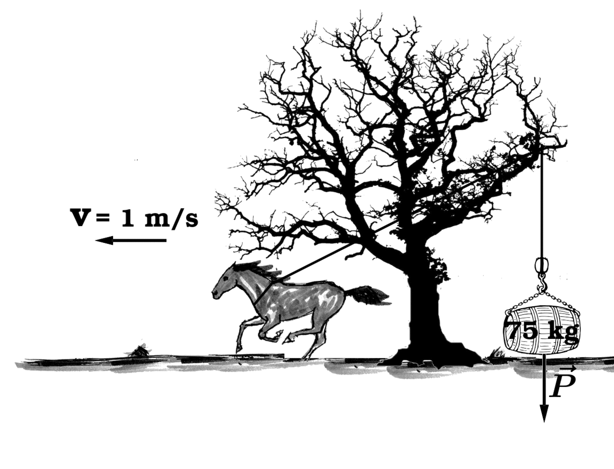

Aula2-23: Potência
Potência média
A potência média é a grandeza física que indica a quantidade de energia transferida (ou transformada) por uma fonte em uma unidade de tempo. Em outras palavras, a potência mede a rapidez com que a energia é cedida ou retirada de um sistema — isto é, a rapidez com que o trabalho é realizado. Se duas máquinas realizam o mesmo trabalho, a mais potente é a que o faz no menor tempo. Podemos calculá-la assim:
Quando a força aplicada é constante e atua na direção do movimento, também vale a relação:
⚛ UNIDADES DE MEDIDA:
No Sistema Internacional (S.I.), a unidade de potência é o watt (W):
Além do watt, outras duas unidades de potência ainda são bastante comuns:
|
Horse-power (HP): unidade de medida originária da Inglaterra. Um HP equivale, aproximadamente, a levantar 76 kg à velocidade de 1 m/s. 1 HP = 745,7 W Cavalo-vapor (CV): unidade de medida originária da França, com valor próximo ao do horse-power. Um CV equivale a levantar 75 kg à velocidade de 1 m/s. 1 CV = 735,5 W |
 |
Rendimento
O rendimento (η) é a razão entre a potência útil e a potência total. A potência total é toda a potência produzida pela fonte; a potência útil é a parcela efetivamente aproveitada para a finalidade desejada — o restante se perde, em geral, na forma de calor. Como a potência útil nunca é maior que a total, o rendimento fica sempre entre 0 e 1 (ou, multiplicado por 100, entre 0% e 100%).